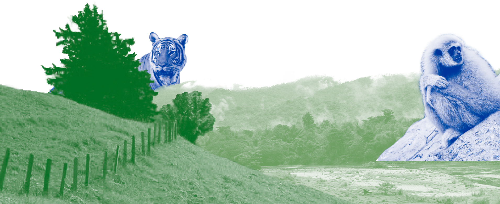
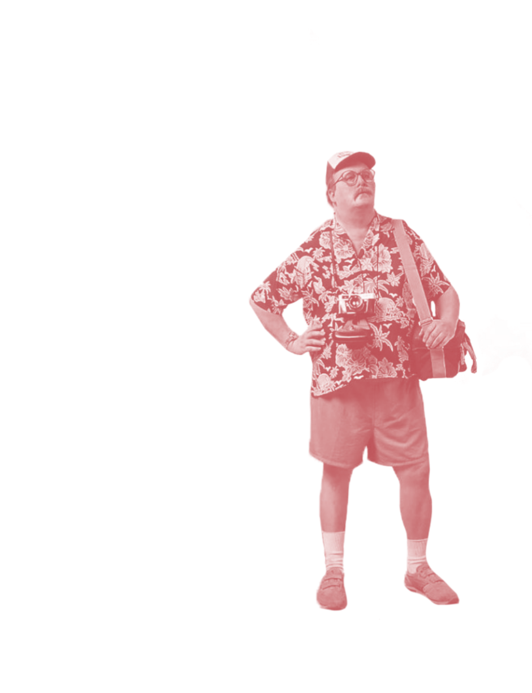
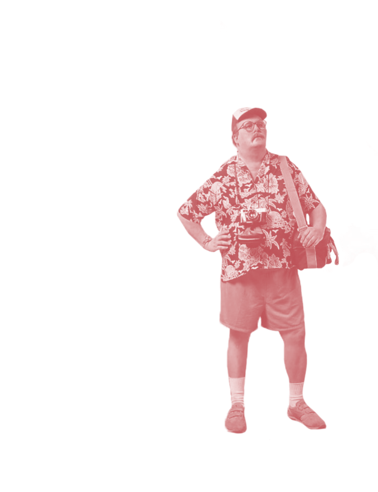

ในปัจจุบันปัญหาขยะในอุทยานแห่งชาติเขาใหญ่
ในปัจจุบันปัญหาขยะในอุทยานแห่งชาติเขาใหญ่
มีมากมาย
มีที่มาจากหลายสาเหตุและส่งผลต่อธรรมชาติในบริเวณอุทยานแห่งชาติ
SCROLL DOWN


ทำไมคนถึงชอบ
ไปเที่ยวเขาใหญ่
เพราะว่ามี น้ำตกเหวสุวัต น้ำตกที่มีชื่อเสียงมาก
ด้านล่างเป็นแอ่งเหมาะกับการเล่นน้ำ
และยังเป็นจุดชมวิวที่สำคัญแห่งหนึ่งของอุทยานแห่งชาติเขาใหญ่\
 แต่... ปัญหาก็เพิ่มมากขึ้น
แต่... ปัญหาก็เพิ่มมากขึ้น
เพราะนักท่องเที่ยวที่มาเที่ยว
ขาดความรับผิดชอบ

 อุทยานแห่งชาติ
อุทยานแห่งชาติ
เขาใหญ่
45,406.46
กิโลกรัม
ในปี 2560 อุทยานแห่งชาติ
เขาใหญ่มีขยะตกค้าง
มากเป็น
อันดับหนึ่ง
2. ดอยอินทนนท์ จ.เชียงใหม่
17,556.02 กิโลกรัม
3. อุทยานแห่งชาติเขาพระวิหาร จ.ศรีสะเกษ
14,905.13 กิโลกรัม
4. อุทยานแห่งชาติผาแต้ม จ.อุบลราชธานี
11,864.48 กิโลกรัม
5. อุทยานแห่งชาติหาดนพรัตน์ธารา -
หมู่เกาะพีพี จ.กระบี่
10,369.24 กิโลกรัม


 โดยเมื่อผ่าท้องของกวางที่ตายแล้ว ก็พบขยะ
โดยเมื่อผ่าท้องของกวางที่ตายแล้ว ก็พบขยะ
พลาสติก เช่น ถุง
เศษเชือก ส้อมพลาสติก

 ภาพกวางกินขยะที่อยู่ภายในบริเวณอุทยาน
ภาพกวางกินขยะที่อยู่ภายในบริเวณอุทยาน


 
นอกจากปัญหาขยะแล้ว

นอกจากปัญหาขยะแล้ว
อีกหนึ่งปัญหาใหญ่คือ
อุทยานแห่งชาติเขาใหญ่ประสบปัญหาการบุกรุกป่า
มาทำเป็นรีสอร์ตและสถานที่ท่องเที่ยวหลายแห่ง
ในปี 2558
การบุกรุกป่า